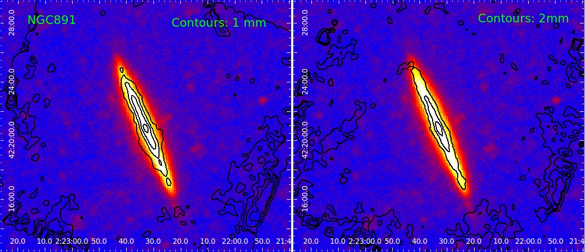

I'm part of the
IMEGIN
(Interpreting the Millimeter EMission of Galaxies) collaboration, one of
five guaranteed-time large programs proposed by the NIKA2 collaboration.
About two-hundred observing hours have been awarded on the 30-meter IRAM
telescope to observe a sample of nearby galaxies of varying morphological
type.
The key science themes tackled are:
. Disentangling spatially resolved
galaxy spectral energy
distributions from dust contribution,
free-free and synchrotron emission.
. Evolution of the dust-to-gass
ration within galaxies.
. Study the elusive sub-millimeter
excess in galaxies.
|

Preliminary image of
the galaxy NGC891 with NIKA2 with its contours superimposed on a Herschel
image
|
I'm also part of the SEINFELD (Sub-millimeter Excess In Nearby
Fairly-Extended Low-metallicity Dwarfs) project, a pilot study to test the
feasibility of reliably estimating the strength of the sub-millimeter excess
in a few nearby dwarf galaxies in the two NIKA2 bands.